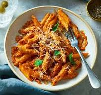

Odin Recipe

Description
Pasta is a type of food typically made from an unleavened dough of wheat flour mixed with water or eggs, and formed into sheets or other shapes.
Ingredients
- 1 lb pasta (spaghetti, penne, or your choice)
- 2 tablespoons olive oil
- 3 cloves garlic, minced
- 1 can (28 oz) crushed tomatoes
- 1 teaspoon dried oregano
- 1 teaspoon dried basil
- Salt and pepper to taste
- 1/4 cup grated Parmesan cheese
- Fresh basil leaves for garnish
Steps
- Boil 4 quarts of salted water and cook 1 lb pasta according to package instructions; drain and set aside.
- In a large pan, heat 2 tablespoons olive oil over medium heat; sauté 3 minced garlic cloves until fragrant.
- Add 1 can (28 oz) crushed tomatoes, 1 teaspoon dried oregano, and 1 teaspoon dried basil; simmer for 10-15 minutes. Season with salt and pepper to taste.
- Toss the cooked pasta with the sauce; serve with 1/4 cup grated Parmesan cheese and fresh basil leaves for garnish.